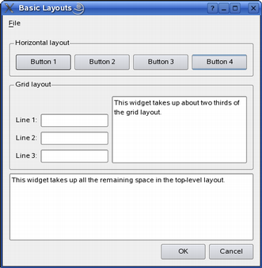
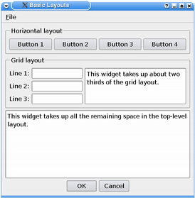
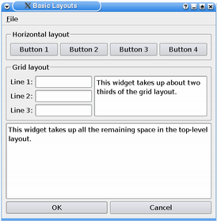

| Home · All Classes · Main Classes · Grouped Classes · Modules · Functions |
Files:
The Basic Layouts example shows how to use the standard layout managers that are available in Qt: QBoxLayout and QGridLayout.

The QBoxLayout class lines up widgets horizontally or vertically. QHBoxLayout and QVBoxLayout are convenience subclasses of QBoxLayout.
class Dialog : public QDialog
{
Q_OBJECT
public:
Dialog();
private:
void createMenu();
void createHorizontalGroupBox();
void createGridGroupBox();
enum { NumGridRows = 3, NumButtons = 4 };
QMenuBar *menuBar;
QGroupBox *horizontalGroupBox;
QGroupBox *gridGroupBox;
QTextEdit *smallEditor;
QTextEdit *bigEditor;
QLabel *labels[NumGridRows];
QLineEdit *lineEdits[NumGridRows];
QPushButton *buttons[NumButtons];
QPushButton *okButton;
QPushButton *cancelButton;
QMenu *fileMenu;
QAction *exitAction;
};
The Dialog class inherits QDialog. It is a custom widget that displays its child widgets using the geometry managers: QHBoxLayout, QVBoxLayout and QGridLayout.
We declare three private functions to simplify the class constructor: The createMenu(), createHorizontalGroupBox() and createGridGroupBox() functions create several widgets that the example uses to demonstrate how the layout affects their appearances.
Dialog::Dialog()
{
createMenu();
createHorizontalGroupBox();
createGridGroupBox();
bigEditor = new QTextEdit;
bigEditor->setPlainText(tr("This widget takes up all the remaining space "
"in the top-level layout."));
okButton = new QPushButton(tr("OK"));
cancelButton = new QPushButton(tr("Cancel"));
okButton->setDefault(true);
connect(okButton, SIGNAL(clicked()), this, SLOT(accept()));
connect(cancelButton, SIGNAL(clicked()), this, SLOT(reject()));
In the constructor, we first use the createMenu() function to create and populate a menu bar, the private createHorizontalGroupBox() function to create a group box containing four buttons with a horizontal layout, and the private createGridGroupBox() function to create a group box containing several line edits and a small text editor, displayed in a grid layout.
The menu bar and group boxes are in turn managed by the Dialog widget's main layout. This outer layout also manages several other widgets: We create a big text editor and a couple of buttons.
Note that we don't have to specify a parent for the widgets when we create them. The reason is that all the widgets we create here will be added to a layout, and when we add a widget to a layout, it is automatically reparented to the widget the layout is installed on.
QHBoxLayout *buttonLayout = new QHBoxLayout;
Before we create and customize the main layout, we create a layout for the OK and Cancel buttons. We use a QHBoxLayout for this purpose.
The QBoxLayout class takes in general the space it gets (from its parent layout or from the parent widget), divides it up into a series of boxes, and makes each managed widget fill one box. If the QBoxLayout's orientation is Qt::Horizontal the boxes are placed in a row. If the orientation is Qt::Vertical, the boxes are placed in a column. The corresponding convenience classes are QHBoxLayout and QVBoxLayout, respectively.
buttonLayout->addStretch(1);
In addition to adding the two buttons to the layout, we also add a stretchable space to the layout using the QBoxLayout::addStretch() function. The layout will display its widgets and its stretchable spaces according to their size policy, strech factors and size hints. Since we add the stretch before we add the widgets, the buttons will be located in the application's right corner.
 |  |
If we also added another stretch after adding the buttons, the buttons would be centered as shown in the left screenshot above. The right screenshot shows how the buttons would appear if we didn't add any stretchable space at all: The buttons would then stretch to fill the avaliable space.
buttonLayout->addWidget(okButton);
buttonLayout->addWidget(cancelButton);
We use the QBoxLayout::addWidget() function to add the widgets to the end of layout. Each widget will get at least its minimum size and at most its maximum size. It is possible to specify a stretch factor in the addWidget() function, and any excess space is shared according to these stretch factors. If not specified, a widget's stretch factor is 0.
QVBoxLayout *mainLayout = new QVBoxLayout;
mainLayout->setMenuBar(menuBar);
mainLayout->addWidget(horizontalGroupBox);
mainLayout->addWidget(gridGroupBox);
mainLayout->addWidget(bigEditor);
mainLayout->addLayout(buttonLayout);
setLayout(mainLayout);
setWindowTitle(tr("Basic Layouts"));
}
The outer layout for the Dialog widget is a QVBoxLayout.
When we call the QLayout::setMenuBar() function, the layout places the provided menu bar at the top of the parent widget, and outside the widget's content margins. All child widgets are placed below the bottom edge of the menu bar.
In the same way we use QBoxLayout::addWidget(), we can use QBoxLayout::addLayout() to add another layout, and its widgets, to the end of the main layout. Again it is possible to specify a stretch factor which, if not specified, is 0.
We install the main layout on the Dialog widget using the QWidget::setLayout() function, and all of the layout's widgets are automatically reparented to be children of the Dialog widget.
void Dialog::createMenu()
{
menuBar = new QMenuBar;
fileMenu = new QMenu(tr("&File"), this);
exitAction = fileMenu->addAction(tr("E&xit"));
menuBar->addMenu(fileMenu);
connect(exitAction, SIGNAL(triggered()), this, SLOT(accept()));
}
In the private createMenu() function we create a menu bar, and add a pull-down File menu containing an Exit option.
void Dialog::createHorizontalGroupBox()
{
horizontalGroupBox = new QGroupBox(tr("Horizontal layout"));
QHBoxLayout *layout = new QHBoxLayout;
for (int i = 0; i < NumButtons; ++i) {
buttons[i] = new QPushButton(tr("Button %1").arg(i + 1));
layout->addWidget(buttons[i]);
}
horizontalGroupBox->setLayout(layout);
}
When we create the horizontal group box, we use a QHBoxLayout as the internal layout. We create the buttons we want to put in the group box, add them to the layout and install the layout on the group box.
void Dialog::createGridGroupBox()
{
gridGroupBox = new QGroupBox(tr("Grid layout"));
In the createGridGroupBox() function we use a QGridLayout which lays out widgets in a grid. It takes the space made available to it (by its parent layout or by the parent widget), divides it up into rows and columns, and puts each widget it manages into the correct cell.
for (int i = 0; i < NumGridRows; ++i) {
labels[i] = new QLabel(tr("Line %1:").arg(i + 1));
lineEdits[i] = new QLineEdit;
layout->addWidget(labels[i], i + 1, 0);
layout->addWidget(lineEdits[i], i + 1, 1);
}
For each row in the grid we create a label and an associated line edit, and add them to the layout. The QGridLayout::addWidget() function differ from the corresponding function in QBoxLayout: It needs the row and column specifying the grid cell to put the widget in.
smallEditor = new QTextEdit;
smallEditor->setPlainText(tr("This widget takes up about two thirds of the "
"grid layout."));
layout->addWidget(smallEditor, 0, 2, 4, 1);
QGridLayout::addWidget() can in addition take arguments specifying the number of rows and columns the cell will be spanning. In this example, we create a small editor which spans three rows and one column.
For both the QBoxLayout::addWidget() and QGridLayout::addWidget() functions it is also possible to add a last argument specifying the widget's alignment. By default it fills the whole cell. But we could, for example, align a widget with the right edge by specifying the alignment to be Qt::AlignRight.
layout->setColumnStretch(1, 10);
layout->setColumnStretch(2, 20);
gridGroupBox->setLayout(layout);
}
Each column in a grid layout has a stretch factor. The stretch factor is set using QGridLayout::setColumnStretch() and determines how much of the available space the column will get over and above its necessary minimum.
In this example, we set the stretch factors for columns 1 and 2. The stretch factor is relative to the other columns in this grid; columns with a higher stretch factor take more of the available space. So column 2 in our grid layout will get more of the available space than column 1, and column 0 will not grow at all since its stretch factor is 0 (the default).
Columns and rows behave identically; there is an equivalent stretch factor for rows, as well as a QGridLayout::setRowStretch() function.
| Copyright © 2006 Trolltech | Trademarks | Qt 4.1.1 |